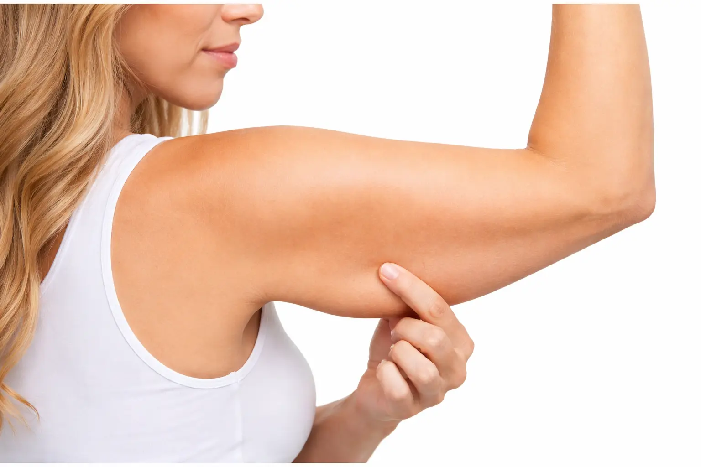

Arm lift surgery removes excess skin and reshapes the upper arms to create a firmer, more defined contour.
Book ConsultationBrachioplasty, commonly known as an arm lift, removes excess skin and fat from the upper arms while tightening underlying tissue. This procedure creates a smoother, more toned appearance, and more youthful-looking arms - ideal for patients experiencing sagging or loose skin that won't respond to exercise alone.
Achieve toned, natural-looking arms that complement your body proportions.
Eliminate loose, sagging skin caused by aging, weight loss, or reduced elasticity.
Enjoy better fit in dresses, tops, and fitted clothing without excess arm bulk.

Smaller incision placed along the inner arm for mild to moderate skin laxity. Ideal for patients with minimal excess skin.
Standard arm lift with incision from armpit to elbow. Addresses significant skin excess and improves overall arm contour.
Extends beyond the upper arm to include side chest or back area for more complete contouring.
Not sure which option suits you? A personalised consultation will help determine the most appropriate approach.
Understanding each step helps you feel confident and prepared throughout your arm lift journey.
Meet with your surgeon to discuss your concerns, assess skin laxity, and plan a personalised arm contouring approach.
Receive pre-operative guidance, including medication adjustments and lifestyle recommendations for a smooth recovery.
The surgery typically takes 1–2 hours under local or general anaesthesia, depending on the extent of correction required.
Most patients return to light activities within 1 week, with gradual improvement and final results visible over 6–8 weeks.